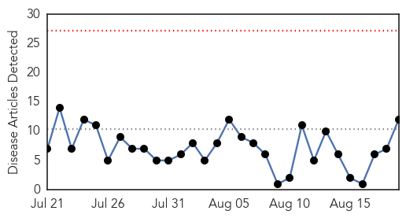

30 Day Trends
Web: 0 alerts, 0 warnings
Twitter: 1 alerts, 0 warnings
Top Articles:
- 1.000
- Another Outbreak? Bird Flu Threatens Liberia
- 0.999
- Seven Things You Need to Know About Equine Influenza
- 0.999
- Decoding WHO's pandemic levels
- 0.994
- Police, Maine Army National Guard train for avian flu outbreak
- 0.897
- Gold Coast hit by ‘significant flu epidemic’
- 0.817
- Bird flu: Ministry destroys 40,000 birds
- 0.790
- Hawke’s Bay Hospital at capacity
- 0.787
- Bacterial disease claims little boy's legs; vaccination has made Hib rare
- 0.739
- Mars Bar-sized gadget could help combat outbreaks
- 0.608
- Gold Coast in grip of potentially deadly flu epidemic: doctors
- 0.608
- Gold Coast in grip of potentially deadly flu epidemic: doctors
- 0.587
- Why vaccine policies and childhood injections are an egregious crime -- Health & Wellness -- Sott.net
Top Tweets:
-
No tweets found for Aug 19, 2015
Web/News Articles
Tweets

Article Locations

Article Confidences